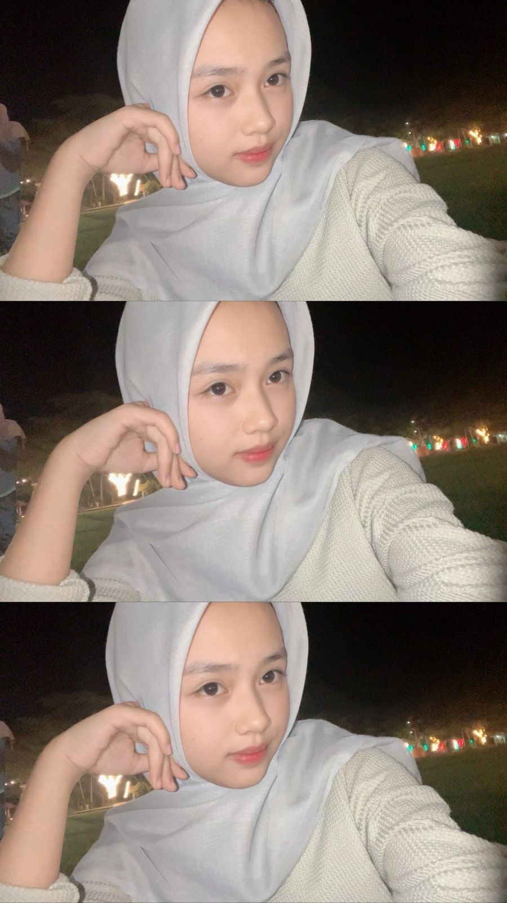

Selamat Datang!
Website ini berisi informasi tentang saya, kontak yang bisa dihubungi, dan galeri foto pribadi. Terima kasih telah berkunjung!
Biodata
Nama: isma
Tanggal Lahir: 17 Mei 2008
Kota Asal: Bantaeng
Hobi: traveling, dan ngedrakor
Kontak Saya
üìß Email: ismaisran102@gmail.com
üì± WhatsApp: 0812-3456-7890
üì∏ Instagram: @yxima4_17
Galeri Foto
